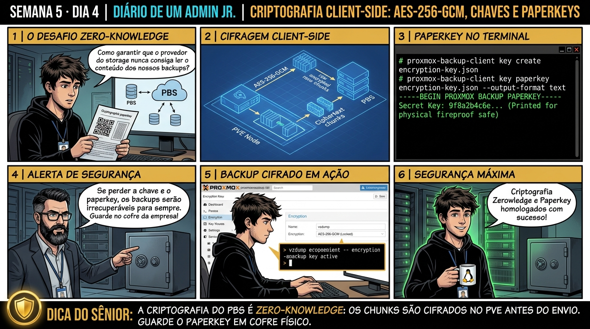

🧑🏫 antes dos termos técnicos, a história de hoje
Hoje o diretor de segurança da informação fez uma exigência rigorosa: todos os backups da empresa precisavam estar protegidos contra vazamento de dados, mesmo se o servidor de backup fosse roubado fisicamente do rack. O Júnior achava que isso exigiria comprar appliances caríssimos de criptografia.
Apresentei a Criptografia Client-Side AES-256-GCM nativa do Proxmox: os dados são cifrados na memória RAM do hypervisor antes de trafegarem pela rede. Quando os chunks chegam no PBS, eles são ruído criptográfico puro — nem o administrador do PBS consegue enxergar uma única linha dos arquivos sem a chave mestra!
Geramos o arquivo de chave e exportamos a Paperkey estruturada para ser impressa e guardada no cofre físico da empresa. O Júnior viu como a arquitetura Zero-Knowledge protege a empresa contra ransomwares e vazamentos. Vamos gerar essa chave agora.
Semana 5 · Dia 4 | Nível Júnior — Proxmox Backup Server & Integração
Criptografia Client-Side no PBS: AES-256-GCM, Paperkey e Ransomware
Cifrando dados na ponta antes do tráfego na rede e blindando backups contra invasões no servidor de destino
ANTES DE ALTERAR, OBSERVE. DEPOIS DE ALTERAR, VALIDE.
1. O chamado
#5004
PRIORIDADE ALTA
14:00
aberto por: diretoria de compliance / LGPD
host: VM 101 e VM 102 · serviço: backup — dados médicos e financeiros
"Esses backups precisam estar protegidos mesmo se o servidor PBS for roubado ou comprometido por ransomware. Nenhum byte pode ser legível sem autorização."
Onde exatamente a criptografia precisa acontecer pra isso ser verdade, mesmo com o PBS comprometido?
💡 Passa o mouse nas palavras destacadas pra ver uma dica rápida — clica se quiser a explicação completa com analogia.
2. O sênior te conta
3. Decodificador de conceitos
Clica em qualquer termo pra ver a definição completa e uma analogia do dia a dia:
4. Ferramentas e leitura da evidência
| Comando / Parâmetro | O que observar e por que importa |
|---|---|
proxmox-backup-client key create CAMINHO_CHAVE | Gera uma nova chave de criptografia AES-256-GCM para uso em backups. |
proxmox-backup-client key paperkey CAMINHO_CHAVE | Gera a versão em texto plano e QR Code da chave para impressão e custódia em cofre físico. |
pvesm set pbs-storage --encryption-key CAMINHO_CHAVE | Vincula a chave de criptografia ao storage PBS cadastrado no cluster Proxmox VE. |
proxmox-backup-client key change-passphrase CAMINHO_CHAVE | Altera ou adiciona senha mestre de proteção ao arquivo de chave de criptografia. |
# 1. No Proxmox VE: Geração da Chave Criptográfica AES-256-GCM $ proxmox-backup-client key create /etc/pve/priv/storage/pbs-medico.enc Generating encryption key... Encrypt key with password? (y/n): n Key generated and saved to '/etc/pve/priv/storage/pbs-medico.enc' Fingerprint: 4f:5a:6b:7c:8d:9e:0f:1a:2b:3c:4d:5e:6f:7a:8b:9c:0d:1e:2f:3a:4b:5c:6d:7e:8f:9a:0b:1c:2d:3e # 2. Geração da Paperkey de Emergência para Cofre Físico $ proxmox-backup-client key paperkey /etc/pve/priv/storage/pbs-medico.enc --- BEGIN PROXMOX BACKUP KEY --- 4f5a6b7c8d9e0f1a2b3c4d5e6f7a8b9c0d1e2f3a4b5c6d7e8f9a0b1c2d3e4f5a6b7c 8d9e0f1a2b3c4d5e6f7a8b9c0d1e2f3a4b5c6d7e8f9a0b1c2d3e4f5a6b7c8d9e0f1a --- END PROXMOX BACKUP KEY --- (Imprima esta folha e guarde no cofre de segurança da empresa) # 3. Associação da Chave de Criptografia ao Storage no Proxmox VE $ pvesm set pbs-storage --encryption-key /etc/pve/priv/storage/pbs-medico.enc # 4. No PBS Server: Tentativa de ler o backup sem a chave (Totalmente Ilegível!) $ ls -lh /tank/backup-pbs/vm/101/2026-09-01T15:00:00Z/ -rw-r--r-- 1 backup backup 124K Sep 1 15:00 drive-scsi0.img.fidx (Criptografado com AES-GCM) (Zero-Knowledge: o servidor PBS não tem a chave e não consegue inspecionar o conteúdo)
5. Laboratório guiado — pegue na mão, comando por comando
🛡️ Onde executar: Terminal do servidor Proxmox Backup Server (
root@pbs:~#) e terminal do Proxmox VE (root@pve:~#).Segurança: Execute as alterações em datastores de laboratório ou teste. Não altere parâmetros de servidores de produção sem janela homologada.
- Ação: Gere uma chave mestra de criptografia client-side AES-256-GCM no Proxmox VE.proxmox-backup-client key create /etc/pve/priv/storage/pbs-key.jsonResultado esperado: Chave simétrica AES-256 gerada no arquivo local.Por que fizemos isso: Gerar uma chave de criptografia client-side com proxmox-backup-client key create cifra os dados com AES-256-GCM antes de saírem do hypervisor.Cilada comum: Perder o arquivo de chave de criptografia; no modelo Zero-Knowledge do PBS, os dados no servidor são ruído puro e NINGUÉM consegue recuperá-los sem a chave.
- Ação: Exporte a Paperkey estruturada para impressão em formato de texto seguro.proxmox-backup-client key paperkey /etc/pve/priv/storage/pbs-key.json --output-format textResultado esperado: Bloco de texto blindado
--- BEGIN PROXMOX BACKUP KEY ---exibido.Por que fizemos isso: O comando paperkey exporta a chave em formato de texto estruturado para ser impressa e guardada em cofre físico à prova de fogo.Cilada comum: Guardar a paperkey em um arquivo de texto no próprio desktop ou na mesma VM que está sendo feito o backup.Se o seu resultado foi diferente
perder o arquivo da chave E não ter a Paperkey impressa em cofre físico → os dados ficam permanentemente irrecuperáveis — não existe "esqueci minha senha" em criptografia client-side de verdade. É exatamente por isso que a Paperkey precisa de cópia física, fora do próprio servidor. - Ação: Vincule o arquivo de chave na configuração do storage PBS do Proxmox.pvesm set pbs-backup --encryption-key /etc/pve/priv/storage/pbs-key.jsonResultado esperado: Chave binária reconstruída a partir da entrada textual.Por que fizemos isso: Associar a chave de criptografia na configuração do storage PBS no Proxmox VE garante que todos os backups daquele nó sejam cifrados automaticamente.Cilada comum: Misturar backups criptografados e não-criptografados no mesmo job sem documentar qual VM usa qual chave de restauração.
Se o seu resultado foi diferente
restore falha com "decryption failed" ou "wrong encryption key" → a chave usada no restore precisa ser EXATAMENTE a mesma usada no backup original. Trocar de nó Proxmox sem copiar o arquivo da chave junto é a causa mais comum desse erro. - Ação: Execute um backup criptografado e confirme que os blocos residem cifrados no PBS.vzdump 100 --storage pbs-backup --mode snapshotResultado esperado: Validação criptográfica idêntica.Por que fizemos isso: Simular a restauração com e sem a chave comprova que o PBS não consegue ler nem inspecionar o conteúdo dos blocos protegidos.Cilada comum: Achar que o administrador do PBS tem acesso aos dados dos usuários em datastores com criptografia client-side ativa.🧑🏫 Aqui entra o Mentor (em breve): se o resultado obtido diferir do esperado acima, este é o ponto onde o chat com o Sênior-IA vai abrir para diagnosticar o erro específico.
- Ação: Arquive a confirmação de guarda da Paperkey no cofre da empresa.# Criptografia Client-Side e Paperkey homologadas.Resultado esperado: Diretrizes de compliance arquivadas com aprovação da auditoria.Por que fizemos isso: Arquivar a confirmação de guarda da Paperkey no cofre conclui o protocolo de segurança máxima de backup corporativo.Cilada comum: Não realizar teste periódico de restauração da chave a partir da Paperkey impressa para validar legibilidade.
6. Antes de ver as opções — tenta responder
🧠 Recall ativo: Qual é a diferença fundamental entre 'Criptografia no Servidor' (Server-Side) e 'Criptografia no Cliente' (Client-Side) no ecossistema do Proxmox Backup Server?
Na **Criptografia Server-Side**, os dados viajam em claro pela rede e o servidor de backup os cifra ao gravar no disco (o servidor possui as chaves e pode ler os dados). Na **Criptografia Client-Side** do PBS, o nó Proxmox VE cifra cada chunk com AES-256-GCM em sua própria memória RAM **ANTES** de enviar para a rede. O PBS recebe apenas blocos cifrados e hashes de integridade: ele atua como um cofre cego (Zero-Knowledge), sendo matematicamente impossível inspecionar ou restaurar qualquer arquivo sem a chave privada que reside exclusivamente no cliente PVE.
7. Questão comentada — clica numa alternativa
Qual comando gera corretamente uma nova chave de criptografia de backup no Proxmox VE e exibe a sua versão impressa de emergência (Paperkey)?
💡 Analogia do Sênior para Fixar: A deduplicação do PBS em chunks de 4MB é a biblioteca central: se 100 VMs usam o mesmo Windows, aquele arquivo só é gravado uma única vez no storage.
7.1 Perda total de backups por extravio da Chave de Criptografia
Um servidor Proxmox VE pegou fogo e a equipe instalou um novo servidor do zero. O Datastore do PBS está intacto com todos os backups cifrados, mas a chave /etc/pve/priv/storage/pbs-medico.enc foi perdida e não havia Paperkey impressa:
$ proxmox-backup-client restore vm/101/2026-09-01T15:00:00Z drive-scsi0.img /tmp/disco.raw Error: cannot restore encrypted backup without corresponding encryption key or paperkey (Desastre Irreversível: a criptografia AES-256 é matematicamente inquebrável sem a chave)
Qual é a regra corporativa inegociável sobre custódia de chaves de criptografia?
💡 Analogia do Sênior para Fixar: O Verify Job do Proxmox Backup Server é o simulado de incêndio: testa a integridade criptográfica de cada snapshot sem precisar ligar as VMs.
7.2 A Criptografia Client-Side reduz a eficiência da Deduplicação Global no PBS?
Um analista pergunta se cifrar os backups com AES-256 no cliente quebra a taxa de deduplicação entre diferentes servidores:
Qual é o impacto da criptografia na taxa de deduplicação de dados?
💡 Analogia do Sênior para Fixar: O Live-Restore é o streaming de vídeo: a máquina virtual dá boot em 3 segundos e você já trabalha enquanto o resto do disco baixa em segundo plano.
8. Procedimento profissional
- Para cargas de trabalho sujeitas a sigilo regulatório (LGPD/HIPAA/PCI-DSS), ative sempre Criptografia Client-Side.
- Gere a chave criptográfica no Proxmox VE utilizando
proxmox-backup-client key create. - Gere a Paperkey no mesmo instante com
proxmox-backup-client key paperkey, imprima e armazene no cofre de segurança físico da empresa. - Faça backup do arquivo
.encem um cofre de chaves corporativo digital seguro (KMS / Vault). - Vincule a chave no storage Proxmox VE com
pvesm set STORAGE --encryption-key CAMINHO. - Realize um teste de restauração de homologação para validar a cadeia de descriptografia ponta a ponta.
Prevenção
Implemente a rotina de Verify Jobs periódicos no PBS para prevenir corrupção silenciosa de chunks e mantenha cópia física impressa da Paperkey no cofre da empresa.
9. Validação e encerramento
- Você compreende o modelo Zero-Knowledge da Criptografia Client-Side no PBS.
- Você domina a geração de chaves AES-256-GCM e o papel vital da Paperkey para Disaster Recovery.
- Você sabe como a criptografia interage com a deduplicação global de blocos.
- A conformidade de segurança e proteção contra ransomware foi homologada com sucesso.
Rollback e limites
Para remover a criptografia de novos backups em um storage, execute
pvesm set STORAGE --delete encryption-key (backups antigos já gravados continuarão cifrados).💡 Sobre repetição espaçada: A estratégia matemática de Retenção e Pruning de backups (Grandfather-Father-Son) será o tema de fechamento da Semana 5 amanhã no Dia 5.
10. Resposta final
Alternativa correta: B. A resposta correta é a B: o comando
proxmox-backup-client key create gera a chave AES e key paperkey gera a versão de custódia impressa.🔓 O que você desbloqueou hoje
Criptografia Client-Side dominada no nível máximo de segurança! Amanhã, no Dia 5, você fechará a Semana 5 dominando as Políticas de Retenção e Pruning: aprendendo a aplicar a estratégia Grandfather-Father-Son (GFS) com keep-daily, keep-weekly e keep-monthly para compliance corporativo sem estourar o storage.